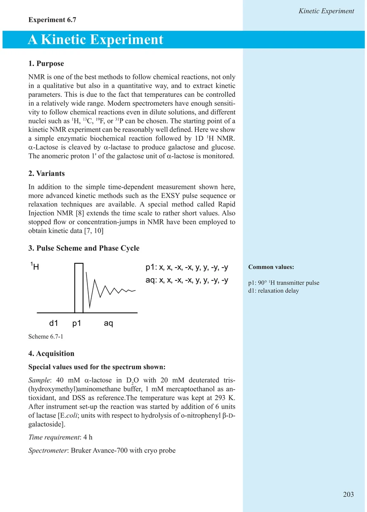
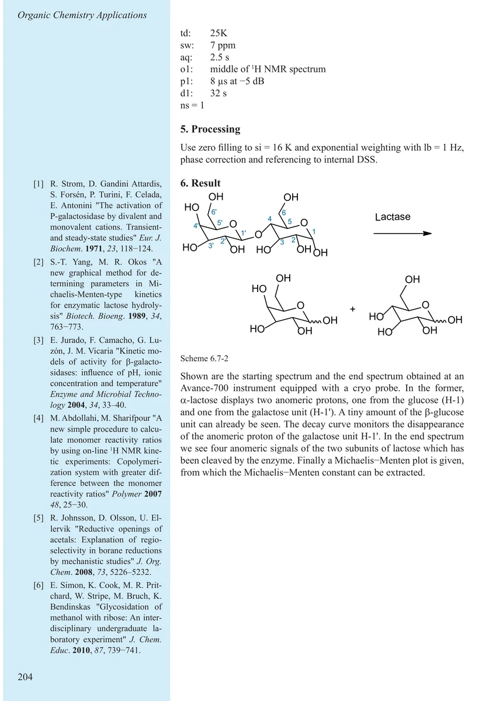
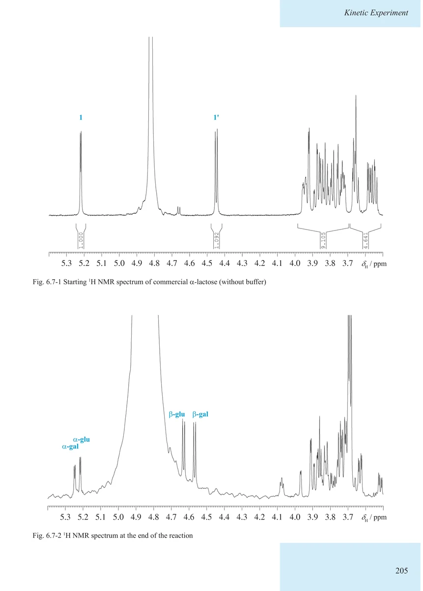
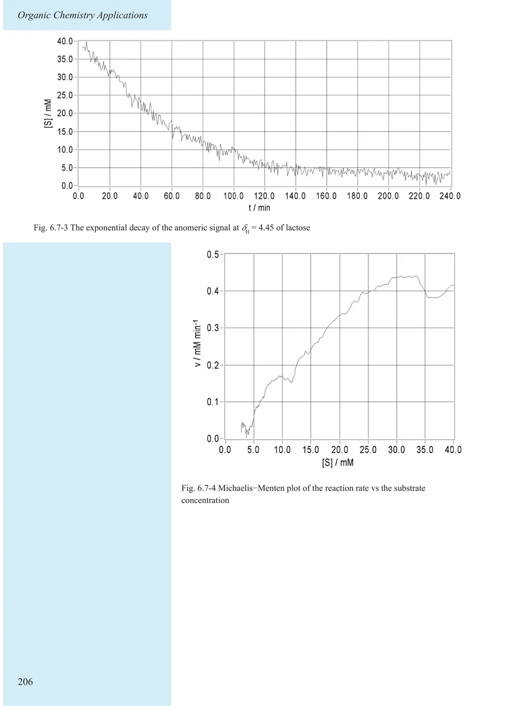
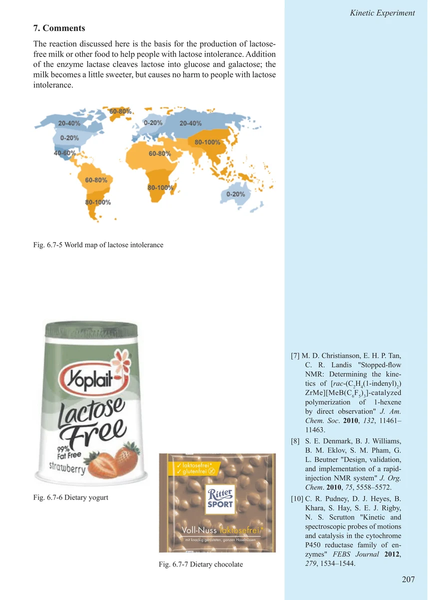
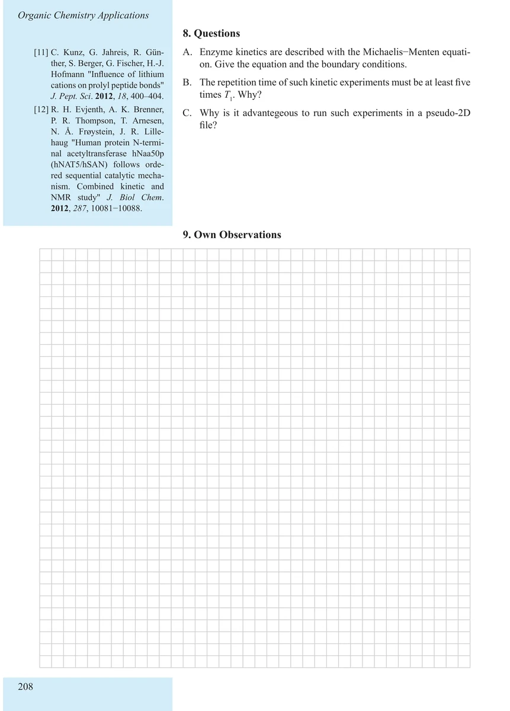

Item 6.7
A Kinetic Experiment
动力学实验
PDF 213–218 · 原书 203–208 · Organic Chemistry Applications






核磁共振实验方法、脉冲序列与谱图实践
Item 6.7
动力学实验
PDF 213–218 · 原书 203–208 · Organic Chemistry Applications





